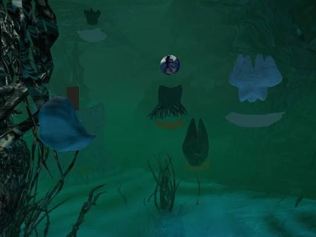

Leo Castaneda
Camoflux Recall Grotto
2026

Camoflux Recall Grotto is an interactive web-based game set in an underwater-like landscape. The player takes the role of an organic drone that collects water and sunlight to grow a virtual garden. As the plants grow, they reveal holographic memories. The project combines natural and technological elements and creates a world where the player can explore and interact with the environment.